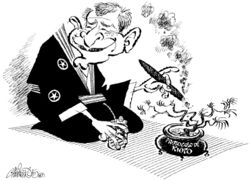

Protocolo de Kioto
 De: La Frikipedia, la enciclopedia extremadamente seria.
De: La Frikipedia, la enciclopedia extremadamente seria.

|
¡LISTA!
Este artículo o sección no es más que una torpe lista. Si crees que vale la pena, edítalo para que tenga párrafos y esas cosas.
|

|
Este artículo necesita ser ilustrado. Busca una afoto en nuestro depósito de imágenes o donde sea y ponla, pero que no sea pr0n, que se cabrea el señor del adSense y nos corta el grifo de los dólare. Y sin dólare no hay servidor...
|
 Explicación gráfica del protocolo de Kioto
El protocolo de Kioto consiste en dar de ostias a los japos para que salgan evacuar la población debido a algún peligro, generalmente porque Godzilla se esta dando de leches con Matzinger Z o con algún otro maldito bicho supermegagrande. Aunque también se da el protocolo si se esta en guerra con otro país y están atacando Kioto.
¿Que se puede hacer dado el protocolo de Kioto?
Las opciones no son muchas ya que te evacuaran tan deprisa que se te ira el color, pero por suerte aqui tenemos algunas cosas que puedes hacer antes de que te evacuen:
- Mirar al cielo y esperar que aparezca Superman.
- Entrar en la Frikipedia. [ Mas recomendada ]
- Decir un trabalenguas.
- Llorar.
- Saltar desde el balcon, o en su defecto ver la tele.
- Hacerte el Kirihara, que consiste en hacer que tu amigo se suicide.
- Ponerte a leer mangas. [ opción preferida de los Otakus ]
- Instalarte el
Internet Explorer Firefox.
- Hacerte el Haraikiri. [ opción mas votada por los EMOS de Kioto ]
- Leerse la Biblia, o en su defecto el Quijote. [ son igual de grandes ]
Procedimientos que se hacen en el protocolo de Kioto
Aquí veréis los pasos que siguen la Guardia Civil Japonesa Policía de Kioto para evacuarte de una manera limpia, ordenada, segura, civilizada y muy organizada:
- Segundo: Se organizan para ver a quien salvan primero [ suelen ser los ricos y los que les caen bien ].
- Tercero: Cuando se dividen, se distinguen dos grupos: Los polis que hacen el trabajo bien y los polis que gritan se ponen nerviosos y pegan tiros.
- Cuarto: El segundo grupo entra en tu bloque de pisos y empieza a llamar casa por casa y si no les respondes antes de que llamen tiran la puerta abajo dicen: ¡¡Al suelo!!, como si fueseis narcotraficantes.
- Quinto: Se les pasa el éxtasis y entonces dicen: Vamos ordenadamente hasta la salida.
- Sexto: Uno de la vivienda tiene que decir: ¡¡No lo conseguiremos vamos a morir!!. Siempre alguno dice eso. [ aunque no sepa porque le evacuan ]
- Séptimo: Salís a la calle aun vivos
es un milagro hasta hay todo es normal, entonces os querrán llevar a algún refugio mugriento y asqueroso.
- Octavo: Llegáis al refugio que veis que esta lleno de morlocs y entonces...
- Noveno: Si conseguís llegar hasta aquí enhorabuena, nadie mas lo a conseguido. Os llevan a vuestras casas porque ya a pasado el peligro, pero notáis que os faltan muebles y la mitad del edificio esta roto...
¿Cuantas veces y porque se han echo los protocolos?
Pues se han hecho unas 5 veces al día [ ahora mismo estarán haciendo uno ]. Los principales motivos son.
- Los políticos japoneses quieren bajar drásticamente la población de Kioto
- Alguien susurra "Godzilla" en una calle desierta de Nueva York. [ el caso mas habitual por el que se hace el protocolo ]
- Alguien dice: Me acabo de instalar el Mozilla Fire fox... [ lo confunden con Godzilla y comienzan otra vez ]
- Los políticos se dan cuenta que casi toda la población de Kioto es EMO y ¿su trabajo es complacer al ciudadano no?
- El Monstruo del Espagueti Volador aparece en Kioto dispuestos a matarles por Herejía.
- Les esta apunto de caer una bomba G de Corea Central.
- Se meten en la Wikipedia. [ aunque solo sea un ciudadano y por error ]
- Se borra algún articulo de la Frikipedia por un Lammer.
- Cuando Mongolia esta harta de ser el hazmereir de Asia y ataca Kioto.
- Por el aburrimiento.
- Se ve el primer rasgo de "infección Cani" en Asia.
- Cuando ven que la población de Otakus es mayor que la de
ciudadanos normales Frikis.
- Cuando ven que Rusia es mas grade que ellos.
- Cuando el chat de la Frikipedia se vuelve un chat para ligar. [ pasa muchisimas veces ]
- Cuando los políticos suben los impuestos y la población se subleva.
- Cuando IP anónima se vuelve Lammer, EMO o visita la Wikipedia.
- Cuando Ismael eclipsa el Sol con su pedazo de cabezón.
- Cuando en la televisión emiten al Dinosaurio Barney, lo confunden con Godzilla y... [ ya sabes lo demas xD ]
- Cuando aparece tu madre que es tan gorda que tubo la regla y creo el Mar Rojo.
- Cuando George Lucas intente hacer el Episodio Num. VII de Star Wars.
Autor(es):
- Krusher
- Doctor grijander
- Frikiman
- Azulejos
- ElInventor
- LucX
- Alzombie
- Artemio
- Dark temptation
- Bryan
Frikipedia 2005-2016, Licencia
GFDL 1.2 - Extraído por FrikiLeaks